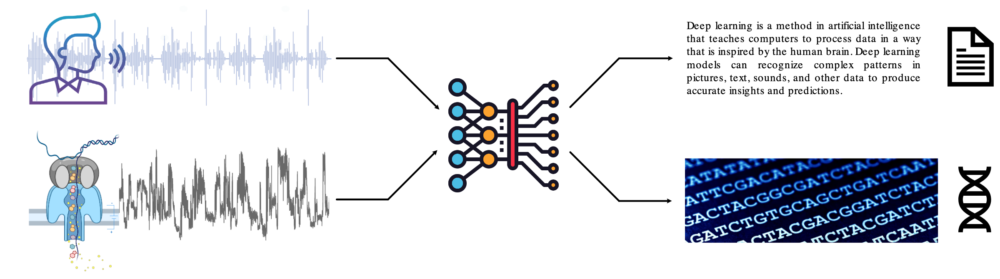
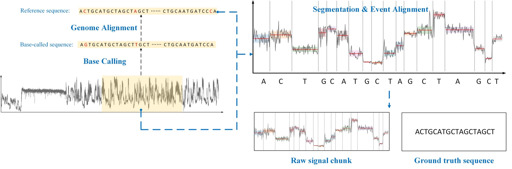
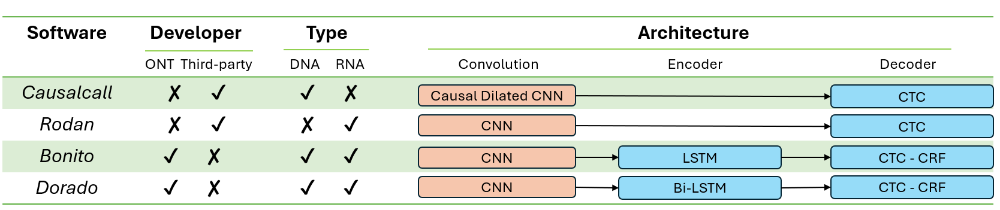

Base calling benchmark
Base calling converts a chunk of raw current into a DNA or RNA sequence, exactly as speech recognition converts audio into text. It is the foundation every other task builds on, and its accuracy is still far from the 99.9% of short-read sequencing.

Results
Guppy 6.0.1 and Dorado 0.5.3 achieve the best DNA and RNA results respectively, with match rates of roughly 93–94%. Official ONT basecallers (Guppy, Bonito, Dorado) clearly outperform the community models Causalcall and Rodan, and successive Guppy versions show how much the models have improved since 2019.
DNA base calling on NA12878
| Model | Version | Normalized by alignment length (%) | Normalized by reference length (%) | ||||||
|---|---|---|---|---|---|---|---|---|---|
| M ↑ | I ↓ | X ↓ | D ↓ | M ↑ | I ↓ | X ↓ | D ↓ | ||
| Causalcall | – | 84.30 | 0.82 | 4.11 | 10.77 | 84.41 | 0.82 | 4.12 | 10.79 |
| Guppy | v2.3.1 | 86.63 | 2.59 | 4.34 | 6.44 | 88.08 | 2.64 | 4.36 | 6.53 |
| Guppy | v4.5.4 | 91.93 | 1.97 | 2.68 | 3.42 | 93.27 | 2.01 | 2.71 | 3.48 |
| Guppy | v6.0.1 | 93.60 | 1.51 | 2.12 | 2.77 | 94.30 | 1.54 | 2.14 | 2.79 |
| Bonito | v0.7.3 | 93.35 | 1.56 | 2.23 | 2.86 | 94.13 | 1.59 | 2.25 | 2.90 |
| Dorado | v0.5.3 | 93.35 | 1.57 | 2.24 | 2.85 | 93.07 | 1.57 | 2.23 | 2.84 |
| Dorado | v0.7.0 | 93.47 | 1.54 | 2.18 | 2.81 | 93.17 | 1.55 | 2.17 | 2.80 |
RNA base calling on hek293t_wt
| Model | Version | Normalized by alignment length (%) | Normalized by reference length (%) | ||||||
|---|---|---|---|---|---|---|---|---|---|
| M ↑ | I ↓ | X ↓ | D ↓ | M ↑ | I ↓ | X ↓ | D ↓ | ||
| Rodan | – | 87.72 | 3.28 | 4.91 | 4.08 | 85.16 | 3.05 | 4.17 | 3.78 |
| Guppy | v2.3.1 | 85.67 | 3.59 | 4.46 | 6.29 | 88.06 | 3.74 | 4.54 | 6.43 |
| Guppy | v4.5.4 | 91.78 | 2.39 | 2.15 | 3.67 | 93.40 | 2.48 | 2.19 | 3.74 |
| Guppy | v6.0.1 | 91.78 | 2.39 | 2.15 | 3.67 | 93.40 | 2.48 | 2.19 | 3.74 |
| Dorado | v0.5.3 | 93.96 | 1.89 | 1.81 | 2.34 | 95.22 | 1.96 | 1.84 | 2.37 |
| Dorado | v0.7.0 | 93.74 | 1.95 | 1.92 | 2.40 | 95.01 | 2.02 | 1.94 | 2.43 |
M = match, I = insertion, X = mismatch, D = deletion. ★ marks the best value per column. Rates are percentages normalized by the alignment length (left) or the ground-truth reference length (right).
Ground truth acquisition

The ground truth is a one-to-one correspondence between raw-signal segments and reference fragments. Reads are first base called with Guppy 6.0.1, aligned to the reference genome, and processed with Nanopolish eventalign. The matched raw-signal segments and reference-sequence fragments are then extracted and sampled. In total the benchmark contains 34,742 DNA and 83,681 RNA pairs of signal chunks and reference segments.
Because modified bases are written as the same nucleotide but produce different current levels, there is an inherent upper limit on ground-truth accuracy; the labels are an approximation.
Evaluation metrics
Predicted sequences are aligned pairwise to the ground truth with the parasail SIMD aligner. From the alignment we count matches (M), mismatches (X), insertions (I) and deletions (D) and report two normalizations:
rate_align = M | X | I | D / (number of aligned bases) × 100% rate_ref = M | X | I | D / (number of reference bases) × 100%A higher match rate is better; higher mismatch, insertion or deletion rates are worse. The implementation is base_calling_evaluation.py.
Baseline models

Guppy, Bonito and Dorado are official Oxford Nanopore basecallers; Causalcall (temporal convolutional network) and Rodan (fully convolutional) come from the research community. Several versions of Guppy and Dorado are included because they are the most widely used.
Basecaller configurations
| Basecaller | Version | Sample | Configuration |
|---|---|---|---|
| Guppy | 2.3.1 | DNA | dna_r9.4.1_450bps.cfg |
| Guppy | 2.3.1 | RNA | rna_r9.4.1_70bps.cfg |
| Guppy | 4.5.4 | DNA | dna_r9.4.1_450bps_hac.cfg |
| Guppy | 4.5.4 | RNA | rna_r9.4.1_70bps_hac.cfg |
| Guppy | 6.0.1 | DNA | dna_r9.4.1_450bps_hac.cfg |
| Guppy | 6.0.1 | RNA | rna_r9.4.1_70bps_hac.cfg |
| Bonito | 0.7.3 | DNA | dna_r9.4.1_e8_hac@v3.3 |
| Dorado | 0.5.3 / 0.7.0 | DNA | dna_r9.4.1_e8_hac@v3.3 |
| Dorado | 0.5.3 / 0.7.0 | RNA | rna002_70bps_hac@v3 |
Download the benchmark data
Each archive contains the fast5 chunks, the ground-truth label.csv, and the outputs of every baseline. Use the base calling dataloader to turn them into training tensors.